WheelieDesigned and built · 12 min read
Three riders start in three towns. The app works out where they meet.
Wheelie is a free Android and web app I designed and built on my own for motorcyclists who ride in groups. It finds a meeting point on the way, keeps the group talking, and turns each ride into a card to share.
- Role
- Design and build, solo
- For
- Motorcyclists who ride in groups
- Timeline
- July 2026
- Platform
- Android and web, from one Flutter codebase
- Stack
- Flutter, Riverpod, flutter_map with OpenStreetMap, Valhalla, Photon, Supabase, WebRTC
- Status
- Beta. Accessibility and glove polish in progress. Not yet tested with riders
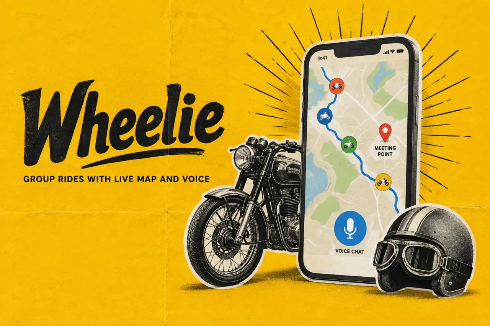
In short
- The problem: a group ride starts before anyone is on the same road. Riders leave from different places, need a fair spot to meet, and then need to stay in touch with gloves on.
- What I built: a map that works out a meeting point from every rider's own route, group voice through each rider's helmet headset, and a shareable card for every finished ride.
- The key idea: first look for a road everyone already takes. Only if there is none, compromise, and never by more than 15% extra riding for anyone.
- Where it stands: a beta. All three parts are built and run end to end on the app's stand-in backend. It has not been tested with riders, gloves or real roads, and I have no usage numbers.
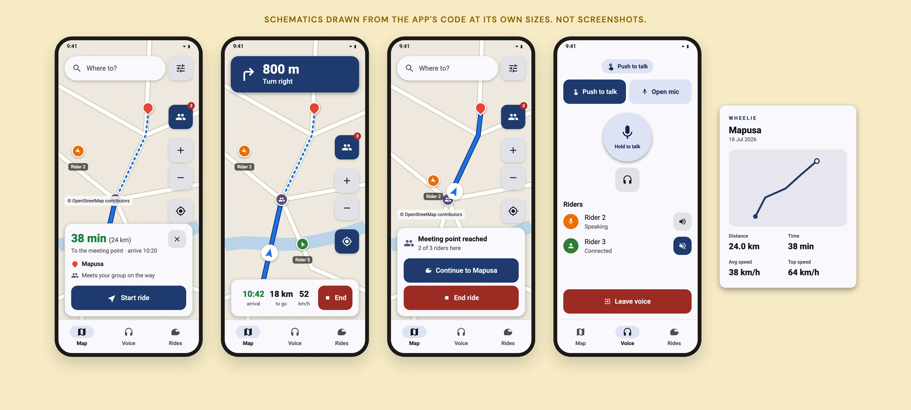
01 Why I built it
A group ride starts before anyone is on the same road
Riding in a group has three parts. First the group has to meet, and the riders often start in different places. Then they ride and need to stay in touch. Afterwards, they want something to show for it.
The person using the app is wearing gloves. They glance at the screen for a second at a time, and the phone sits on a handlebar mount that shakes. I designed for that first and for a desk second.
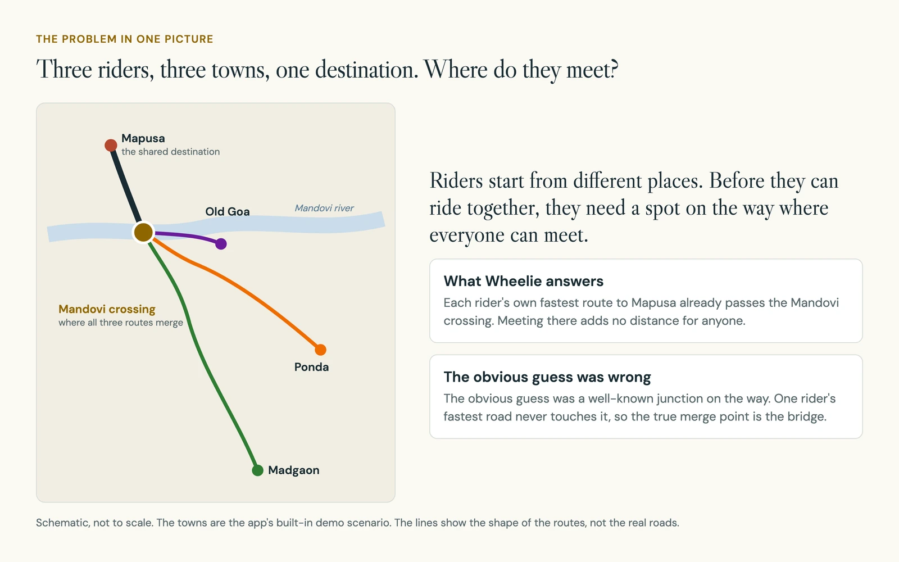
I set two rules before writing any code. Every service had to be free, with no billing keys. And every screen had to work with gloves on.
02 How it works
Three moments, three tabs, and the map never closes
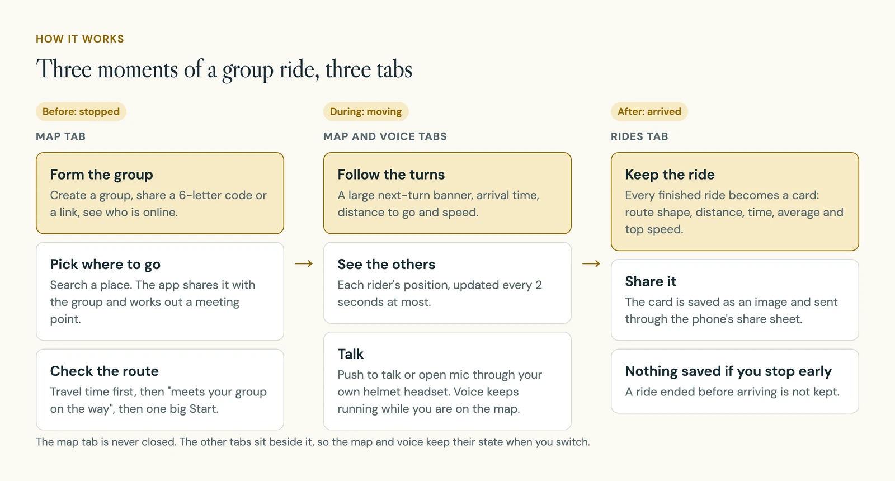
The map is the home screen. Groups, the meeting point and the other riders all sit on top of it. Voice and Rides are separate tabs, but switching to them does not close the map or cut the audio.
Here is one ride with a meeting point, from the preview to the stop.
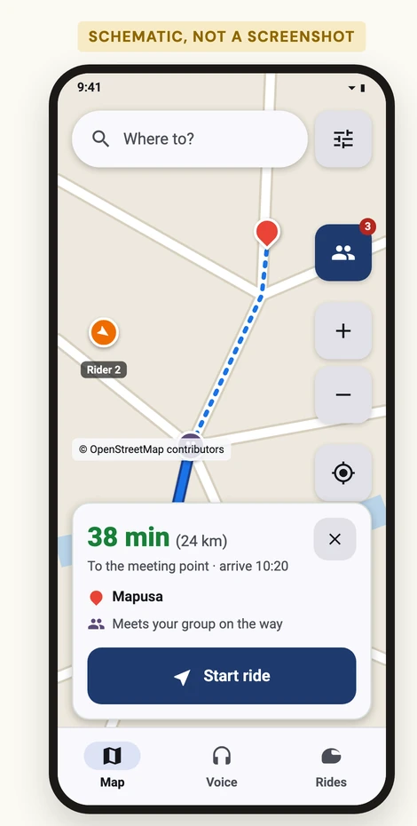
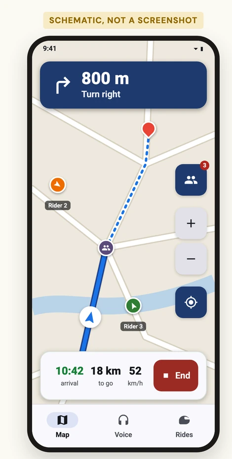
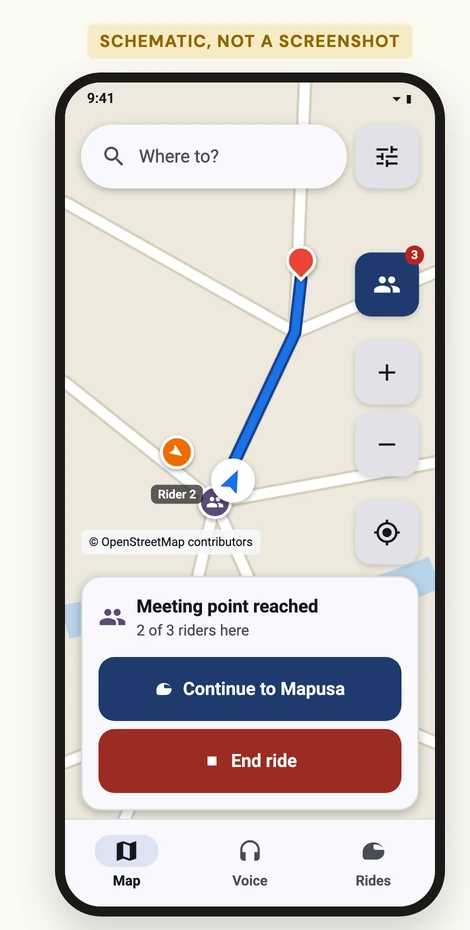
03 Decision 1
Meet where the roads already merge, or not at all
What you see: in a group, you search for a destination. The app shares it with everyone and, if it finds one, routes you to a meeting point first. The preview says "Meets your group on the way".
In the build: the app does not average everyone's positions. It routes every rider to the destination and looks for where those routes join, so riding to the meeting point adds no distance for anyone.
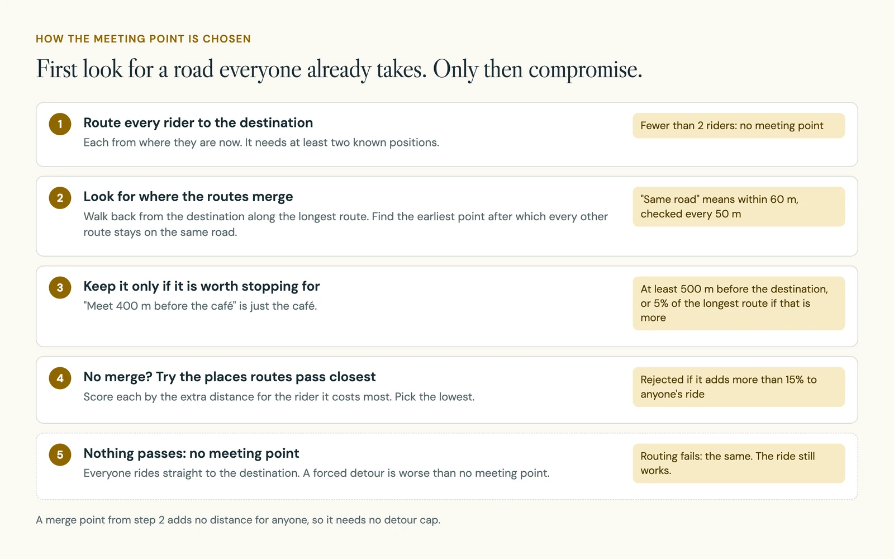
I checked it against a fixed scenario: riders in Madgaon, Old Goa and Ponda, heading for Mapusa. Against the live public router, every route merged at the Mandovi crossing, with 0.0% added to anyone's ride.
The tests passed. Running the same scenario as a live demo inside the app still found three bugs.
| Bug | What went wrong | What I changed |
|---|---|---|
| Old position | The point was worked out from my own position as last sent to the group. That is sent at most every 2 seconds, and a parked phone sends nothing. | It now uses the live location. |
| Too close | "Worth stopping for" was a fixed 300 m. On a 44 km ride it accepted a point that was really the destination. | Now 5% of the longest route, with 500 m as the floor, and the rule covers fallback points too. |
| Drifting | Where two routes share a long stretch, the closest point drifted to a random spot along it, often the destination. | A 5 m tolerance keeps the earliest place the roads meet. |
04 Decision 2
The ride waits at the meeting point until someone taps
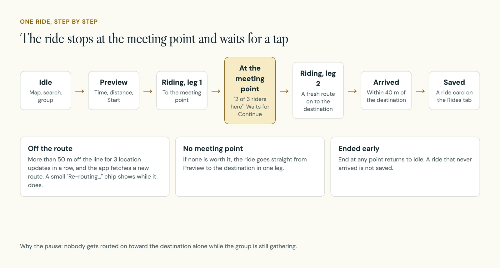
What you see: when you reach the meeting point, a card says how many riders are there, such as "2 of 3 riders here". The route on to the destination starts only when you tap Continue.
In the build: arriving at the meeting point is its own state, not the end of the ride. Continue fetches a fresh route from where you are standing. The ride recording carries on through the stop, so the card covers the whole trip. A test checks that.
05 Decision 3
Glove sizes were rules before they were screens
What you see: large buttons everywhere, and no gesture that needs two fingers or a precise drag. Zoom is two buttons instead of a pinch.
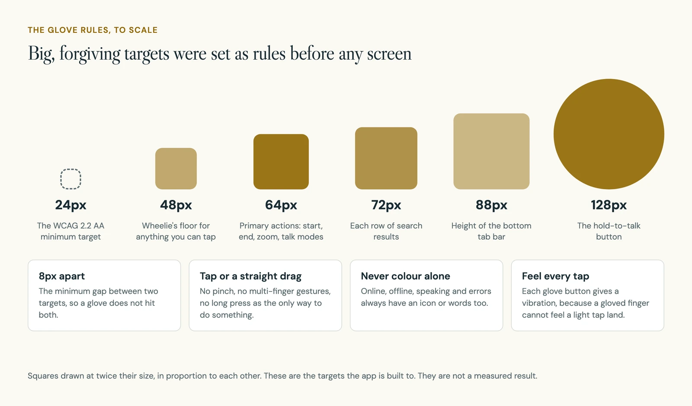
In the build: the sizes live in one small set of constants, and the app theme gives every standard button those minimums. A new screen gets them without anyone remembering.
Two shared buttons do the rest. Each one gives a vibration on tap. The icon button cannot be created without a spoken name, so no button is a bare icon to a screen reader. Tests check the heights and the labels.
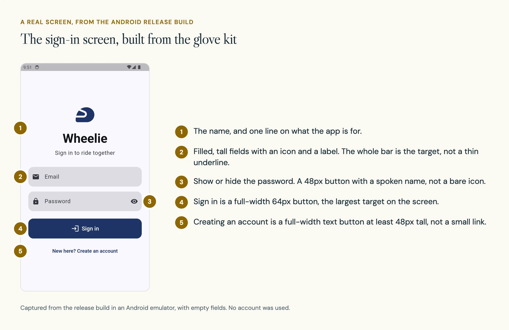
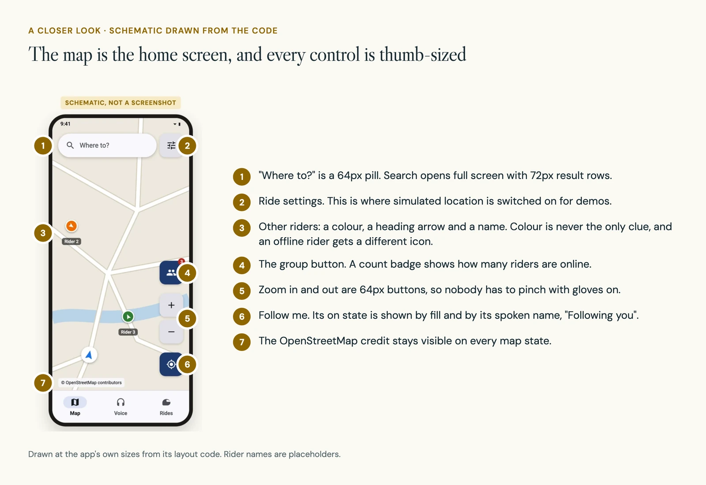
06 Decision 4
Riders see each other live, and nothing is kept

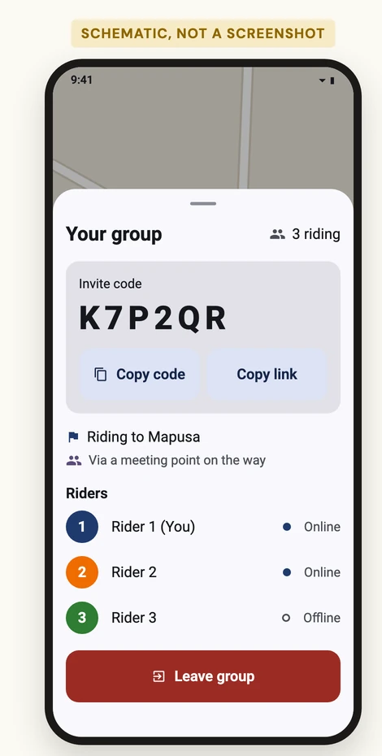
What you see: create a group and share a 6-letter code or a link. Everyone in it appears on the map with their name.
In the build: positions travel as live presence messages and are never written to the database, so no location history is stored. Only members can read a group. Joining goes through one database function that checks the code and adds you in one step, so a stranger cannot list codes and watch a ride.
07 Decision 5
A route for a car can break the rules for a motorcycle
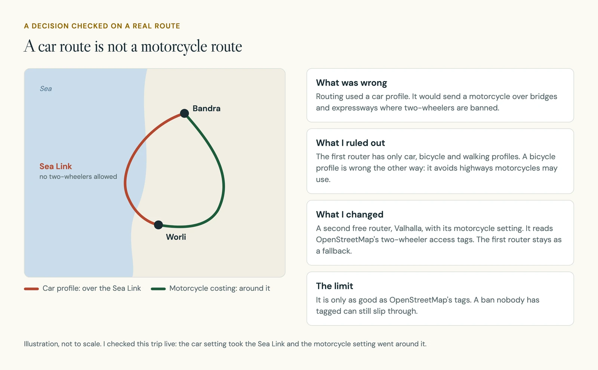
What you see: nothing new on screen. The turn-by-turn guidance looks the same, which was the point.
In the build: the first router had no motorcycle profile, so I added a second free router that has a motorcycle setting. I translated its turn instructions into the words the screens already used, and kept the first router as a fallback. Tests check the translation.
08 Voice
Group voice goes phone to phone, through each rider's own headset
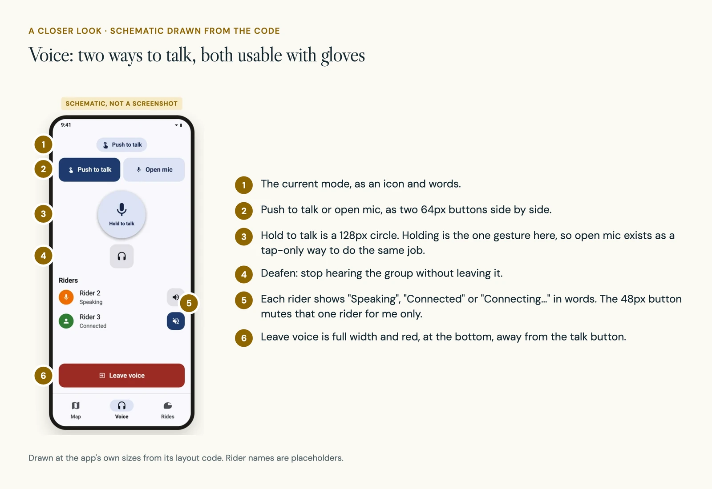
The voice room is the ride group. There is nothing separate to join or pair. If you leave the group, you leave voice too.
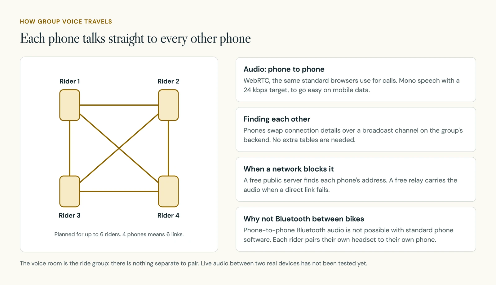
09 Ride cards
A card for every ride, and the bug it made obvious
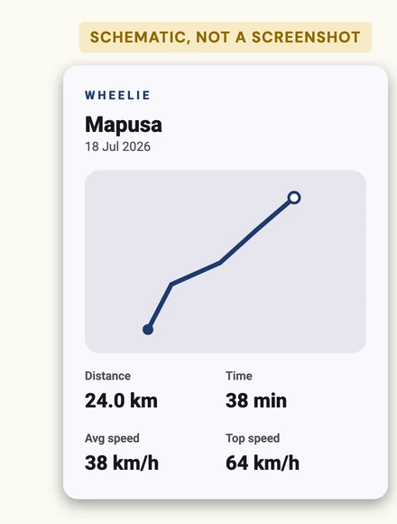
Every finished ride is saved on the phone and shown on the Rides tab. A ride ended before arriving is not kept. Share turns the card into an image and opens the phone's share sheet.
For saving rides I ruled out a full on-device database. Simple key-value storage had already worked on the web version of this app, and a list of rides did not need more.
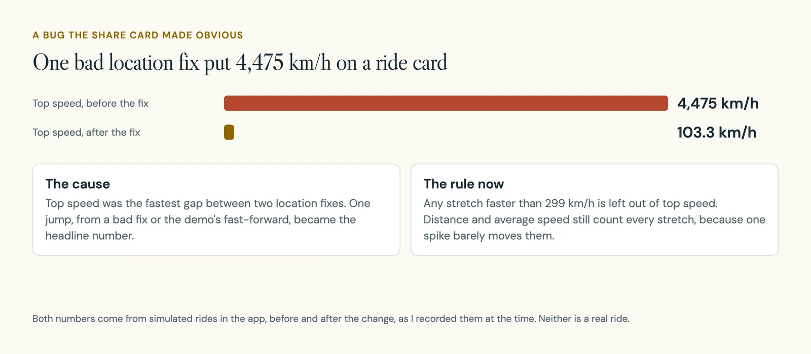
10 The build
Free services, each behind a part I can swap
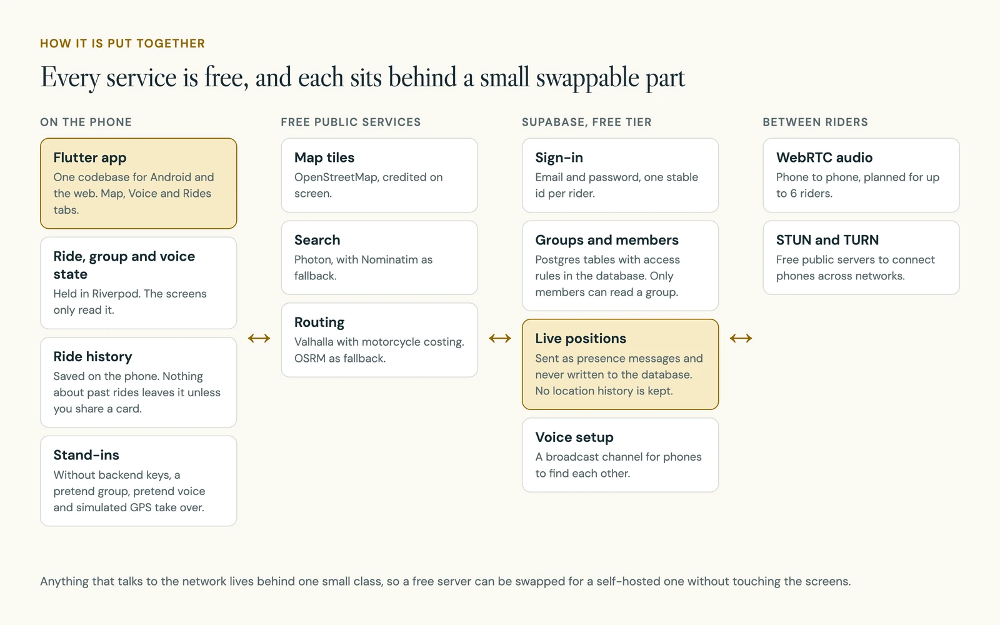
| Part | What I used |
|---|---|
| App | Flutter, for Android and the web |
| State | Riverpod |
| Map | flutter_map with OpenStreetMap tiles |
| Search and routing | Photon, and Valhalla with OSRM as fallback |
| Accounts, groups and live positions | Supabase free tier |
| Voice | WebRTC between phones |
Without backend keys, the app swaps in a pretend group with moving riders, pretend voice and simulated GPS. That let me build and demo every feature at a desk. A built-in Goa scenario sets up three riders in their real towns and fast-forwards the ride.
- 18
- commits over four days, 16 to 19 July 2026
- About 7,300
- lines of app code
- 60
- tests passing at the last run I recorded
- 15
- test files, plus one manual check against the live router
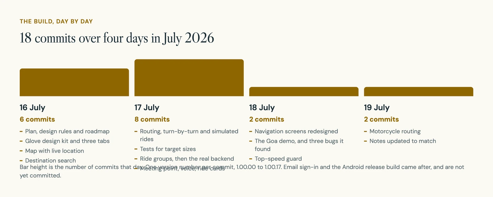
11 Accessibility
The rules are written down, and the audit is still to do
The target is WCAG 2.2 level AA, the common standard for accessible apps. The design rules name the parts that matter most on a bike: target size, a tap-only way to do anything that needs a drag, and consistent help.
- Targets of 64px for main actions and never under 48px, checked by tests.
- State is never shown by colour alone. Online, offline, speaking and errors have an icon or words.
- Every icon button has a spoken name.
- Body text at 16px or more, and big numbers for distance and speed.
- A tap-only way to do anything that otherwise needs a hold or a drag.
12 Where it stands
A working beta that has not been on a ride yet
There is an Android release build with email sign-in, and the web version can run in demo mode with the stand-in backend. Both are betas.
These are not done yet:
- No ride with real riders, and no trial with gloves or in sunlight.
- Live voice between two real phones has not been tested.
- No installs or usage numbers to report.
- No screenshots of the main screens. The ones on this page are drawings.
13 What is next
Test standing still before testing on the move
- Finish the accessibility and glove pass, including a screen-reader check.
- Test with riders while stopped first: forming a group, checking a meeting point and using the headset controls. Anything used while moving needs a controlled setting after that.
- Check what happens with poor signal, a location permission turned off, voice unavailable, and battery use.
- Show clearly when a rider's position is old, so nobody trusts a stale dot.
14 What I learned
Run the real scenario, not only the tests
The meeting point passed its tests and still had three bugs. I found them only by running a real place, with real towns, inside the app. The share card did the same for top speed: a number nobody looked at in a test was impossible to miss on a card.
The free-only rule also shaped the product more than I expected. It decided the router, the voice design and where positions live. When a free tool was wrong for motorcycles, I had to find another free one rather than pay my way out.
Less scrolling. A film worth saving.